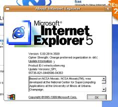
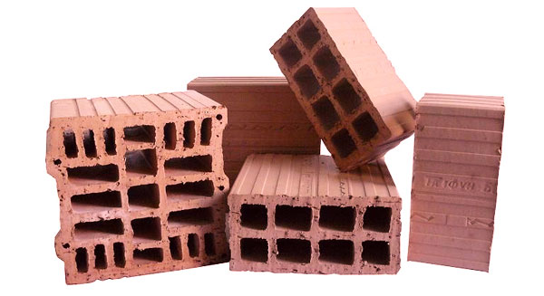

Ember.js
A Single Page Application Framework
Contents
- Intro
- History of web pages
- Problems writting SPAs/RIAs
- Ember.js to the rescue
- Problems with Ember.js
- Conclusion
- Resources
- Questions

Николай Цветинов - Meddle
Web developer from the darker times of the web.
Used to like Java and all the surrounding ecosystem.
Now enlightened by Ruby and it's world.
Plays with Ember.js since August 2012.
Веселин Николов
Front-end developer from the brighter times of the web.
All around a fan of JavaScript and it's surroundings.
Plays with Ember.js since August 2012 too.
What is the purpose of this presentation?
How we got here?
(Brief history)
The humble beginnings
Java Applets
Rise of the Flash
The AJAX transformation
Browsers of the time

TODAY
Single Page Application


How SPAs use AJAX
Writting SPAs

SPA frameworks


A framework for creating ambitious web applications.
Features:
- Two-way data bindings
- Routing
- Custom web components
- Convention over configuration
- Object model
The people behind Ember
Yehuda Katz: contributes to jQuery, Rails. Author of Handlebars.
Tom Dale, Peter Wagenet, Trek Glowacki & many more
Ember Object model
Creating custom classes:
Man = Ember.Object.extend({
hobbies: [],
dislikes: [],
firstName: '',
familyName: '',
sayCatchPhrase: function () { }
}); Extending custom classes
AverageJoe = Man.extend({
hobbies: ['lying around'],
dislikes: ['working'],
sayCatchPhrase: function () {
console.log("Let's go to the coffee shop?");
}
});Creating instances
var arnold = Man.create({
firstName: 'Arnold',
familyName: 'Schwarzenegger'
hobbies: ['kicking asses', 'shooting with his shotgun', 'being BACK!'],
dislikes: ['someone else eating his cookies'],
sayCatchPhrase: function () {
console.log('I WILL BE BACK!!!');
}
});Using mixins(1)
SuperPowers = Ember.Mixin.create({
powers: []
});
SuperHero = Man.extend(SuperPowers, {
});Using mixins(2)
var superMario = SuperHero.create({
firstName: 'Mario',
hobbies: ['Saving the princess', 'Eating shrooms', 'Stomping goombas'],
dislikes: ['turtles', 'goombas'],
powers: ['jumping', 'breaking bricks', 'going into pipes', 'fire flower!!!'],
sayCatchPhrase: function() {
console.log("Ita sa mii Mario!!!");
}
});Computed properties(1)
Bulgarian = AverageJoe.extend({
nickname: '',
sayCatchPhrase: function() {
console.log("Let's drink some Beer/Rakia/Vodka/Rum/Antifreeze!?");
},
fullName: function() {
var firstName = this.get('firstName'),
familyName = this.get('familyName'),
nickname = this.get('nickname');
return "%@ %@ - %@".fmt(firstName, familyName, nickname);
}.property('firstName', 'familyName', 'nickname')
});Computed properties(2)
var meddle = Bulgarian.create({
firstName: 'Nickolay',
familyName: 'Tzvetinov',
nickname: 'Meddle'
});
var misho = Bulgarian.create({
firstName: 'Mihail',
familyName: 'Mihailov',
nickname: 'Shamara'
});
meddle.fullName(); // eval code
misho.fullName(); //eval codeLots of goodies
Architecture
Defining an application
window.TaskManagement = Ember.Application.create({
rootElement: '#ember_content'
});Defining the router
The router is responsible for displaying templates, loading data, and otherwise setting up application state.
TaskManagement.Router.map(function () {
this.resource('tasks', function () {
this.route('new');
this.resource('task', function () {
this.route('view', {
path: '/:task_id'
});
});
});
});/tasks /tasks/new /tasks/task /tasks/task/view/[id]
Route
The route is a definition of a state of the application. It specifies how to get the data for the state.
TaskManagement.TasksRoute = Ember.Route.extend({
model: function() {
return TaskManagement.Task.find();
},
actions: {
destroyTask: function(task) {
task.delete();
}
}
});Controller
Controllers allow you to decorate your models with display logic. They keep the application state.
TaskManagement.TasksController = Ember.ArrayController.extend({
sortProperties: ['description'],
actions: {
sort: function(prop) {
return this.set('sortProperties', [prop]);
}
}
});Views & Templates(1)
<h1>Tasks</h1>
<p> {{#linkTo "tasks.new" class="btn btn-new-task"}}
<i class="icon-plus-sign"></i> New task
{{/linkTo}}
</p>
...Views & Templates(2)
...
<table class="table tasks">
<thead>
<tr>
<th class="span2"> <a {{action sort "created_at"}}> Created: </a> </th>
<th class="span2"> <a {{action sort "owner.email"}}> Assigner: </a> </th>
<th class="span2"> <a {{action sort "performer.email"}}> Assignee: </a> </th>
<th class="span4"> <a {{action sort "description"}}> Description: </a> </th>
<th class="span1"> <a {{action sort "state"}}> Status: </a> </th>
<th class="span1"> Options </th>
</tr>
</thead>
...Views & Templates(3)
...
<tbody>
{{#each task in controller.arrangedContent}}
<tr>
<td> {{task.created_at}} </td>
<td> {{task.owner.email}} </td>
<td> {{task.performer.email}} </td>
<td class="task-description"> {{task.description}} </td>
<td> {{task.state}} </td>
...Views & Templates(4)
...
<td> <div class="btn-group task-options pull-right">
{{#linkTo "task.view" task class="btn-view-task"}}
<i class="icon-eye-open"></i>
{{/linkTo}}
<a class="btn-delete-task" {{action destroyTask task}}>
<i class="icon-remove"></i>
</a>
</div> </td>
</tr>
{{/each}}
</tbody>
</table>Model

Ember Data
- Adapters for different storages
- CRUD methods
- Model lifecycle
- Relations between models
- NOT production ready
Custom adapters
Types of mobile applications
Testing

Now you are playing with power

...not quite
- Bad for SEO, not crawlable by default
- Quite a steep learning curve
- Used to be quite unstable
- Handlebars template syntax
- Not straightforward to implement lazy models